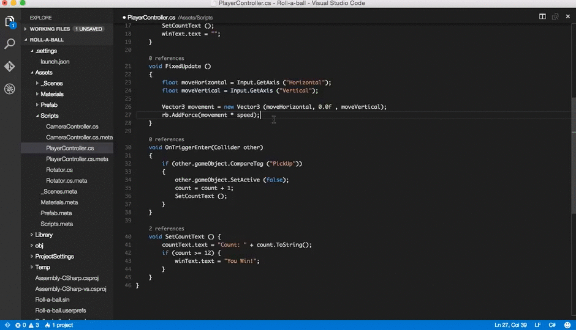
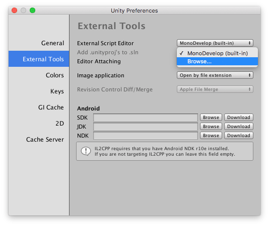
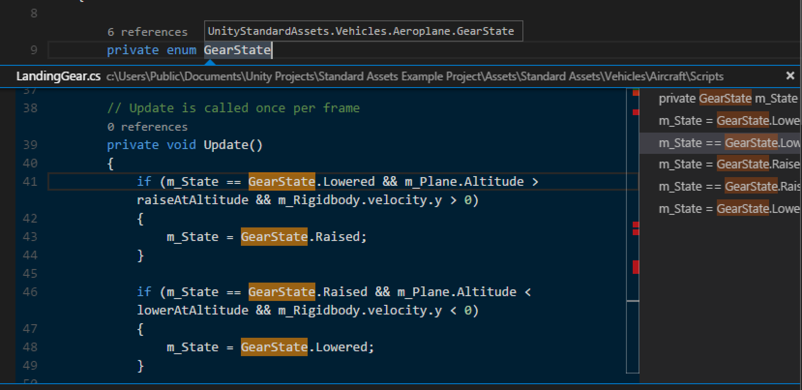
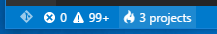
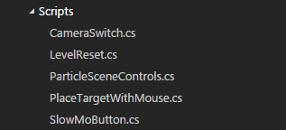

Unity Development with VS Code
Visual Studio Code can be a great companion to Unity for editing and debugging C# files. All of the C# features are supported and more. In the screen below, you can see code colorization, bracket matching, IntelliSense, CodeLens and that's just the start.

Read on to find out how to configure Unity and your project to get the best possible experience.
Prerequisites
From Using .NET Core in Visual Studio Code:
Install the .NET Core SDK, which includes the Runtime and the
dotnetcommand.[Windows only] Logout or restart Windows to allow changes to
%PATH%to take effect.[macOS only] To avoid seeing "Some projects have trouble loading. Please review the output for more details", make sure to install the latest stable Mono release.
Note: This version of Mono, which is installed into your system, will not interfere with the version of MonoDevelop that is installed by Unity.
Install the C# extension from the VS Code Marketplace.
Setup VS Code as Unity Script Editor
Open up Unity Preferences, External Tools, then browse for the Visual Studio Code executable as External Script Editor.

The Visual Studio Code executable can be found at
/Applications/Visual Studio Code.appon macOS,%localappdata%\Programs\Microsoft VS Code\Code.exeon Windows by default.
Unity has built-in support for opening scripts in Visual Studio Code as an external script editor on Windows and macOS. Unity will detect when Visual Studio Code is selected as an external script editor and pass the correct arguments to it when opening scripts from Unity. Unity will also set up a default .vscode/settings.json with file excludes, if it does not already exist (from Unity 5.5 Release notes).
Unity version 2019.2 or above
Since 2019.2, it is required to use the Visual Studio Code editor package. The built-in support for opening scripts from Unity and getting csproj and sln files generated has been removed.
Editing Evolved
With the solution file selected, you are now ready to start editing with VS Code. Here is a list of some of the things you can expect:
- Syntax Highlighting
- Bracket matching
- IntelliSense
- Snippets
- CodeLens
- Peek
- Go-to Definition
- Code Actions/Lightbulbs
- Go to symbol
- Hover
Two topics that will help you are Basic Editing and C#. In the image below, you can see VS Code showing hover context, peeking references and more.

Unity Extensions
The community is continually developing more and more valuable extensions for Unity. Here are some popular extensions that you might find useful. You can search for more extensions in the VS Code Extension Marketplace.
The extensions shown above are dynamically queried. Select an extension tile above to read the description and reviews to decide which extension is best for you. See more in the Marketplace.
Enabling code completion (For recent versions of Unity)
If you are installing VS Code for the first time, you might be missing targeting packs required for Unity's code-completion (IntelliSense) in VS Code.
Targeting pack download links:
Steps:
- Stop VS Code or Unity running.
- Download and install the targeting pack for your targeted framework version / preferred version from one of the above links.
- Start Unity.
- Create and/or open an existing script in VS Code, through Unity, and you should now see code completions.
Enabling Unity warnings
Unity has a set of custom C# warnings, called analyzers, that check for common issues with your source code. These analyzers ship out of the box with Visual Studio but need to be set up manually in Visual Studio Code.
Due to how Unity handles its .csproj files, it does not seem possible to install packages automatically. You will need to download the analyzers from the NuGet website manually. When you're done, open the package file using a tool such as 7zip and extract Microsoft.Unity.Analyzers.dll onto your project's root folder. You can place it inside a folder named NuGet, for example. Do not place it inside Assets or Packages, as that will cause Unity to try to process the .dll, which will make it output an error in the console.
Next, create an omnisharp.json file at the root folder of your project, as explained here. Analyzer support in OmniSharp is experimental at the moment, so we need to enable it explicitly. We also need to point it to the .dll file we just extracted.
Your omnisharp.json file should end up looking like this:
{
"RoslynExtensionsOptions": {
"EnableAnalyzersSupport": true,
"LocationPaths": [
"./NuGet/microsoft.unity.analyzers.1.9.0"
]
}
}
where "./NuGet/microsoft.unity.analyzers.1.9.0" is a relative path pointing to the folder containing the .dll file. Depending on where you placed it, your path may look different.
The Unity analyzers should now be working in your project. You can test them by creating an empty FixedUpdate() method inside one of your MonoBehavior classes, which should trigger a The Unity message 'FixedUpdate' is empty warning (UNT0001).
Note that while it is possible to activate these analyzers, the suppressors they ship with the package (that turn off other C# warnings that may conflict with these custom ones) may not be picked up by OmniSharp at the moment, according to this thread. You can still turn off specific rules manually by following these steps:
- Create a
.editorconfigfile in your project's root folder (next to Unity's.csprojfiles). - Add the following contents to the file:
root=true
[*.cs]
dotnet_diagnostic.IDE0051.severity = none
root=true tells OmniSharp that this is your project root and it should stop looking for parent .editorconfig files outside of this folder.
dotnet_diagnostic.IDE0051.severity = none is an example of turning off the analyzer with ID IDE0051 by setting its severity level to none. You can read more about these settings in the Analyzer overview. You can add as many of these rules as you want to this file.
[*.cs] indicates that our custom rules should apply to all C# scripts (files with the .cs extension).
You are now ready to code in Visual Studio Code, while getting the same warnings as you would when using Visual Studio!
Next steps
Read on to learn more about:
- Basic Editing - Learn about the powerful VS Code editor.
- Code Navigation - Move quickly through your source code.
- Debugging - how to use the debugger with your project
- C# - learn about the C# support in VS Code
Common questions
I don't have IntelliSense
You need to ensure that your solution is open in VS Code (not just a single file). Open the folder with your solution and you usually will not need to do anything else. If for some reason VS Code has not selected the right solution context, you can change the selected project by clicking on the OmniSharp flame icon on the status bar.

Choose the -CSharp version of the solution file and VS Code will light up.

How can I change the file exclusions?
Unity creates a number of additional files that can clutter your workspace in VS Code. You can easily hide these so that you can focus on the files you actually want to edit.
To do this, add the following JSON to your workspace settings.
// Configure glob patterns for excluding files and folders.
"files.exclude": {
"**/.git": true,
"**/.DS_Store": true,
"**/*.meta": true,
"**/*.*.meta": true,
"**/*.unity": true,
"**/*.unityproj": true,
"**/*.mat": true,
"**/*.fbx": true,
"**/*.FBX": true,
"**/*.tga": true,
"**/*.cubemap": true,
"**/*.prefab": true,
"**/Library": true,
"**/ProjectSettings": true,
"**/Temp": true
}
As you can see below this will clean things up a lot...
| Before | After |
|---|---|
 |
 |
How can I debug Unity?
Install the Debugger for Unity extension. And check out Debugging with VS Code to learn more about VS Code debugging support.